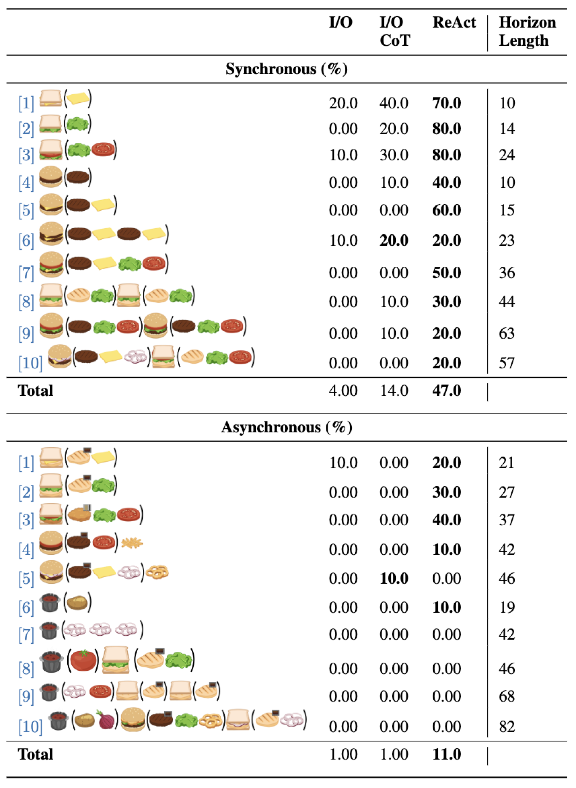
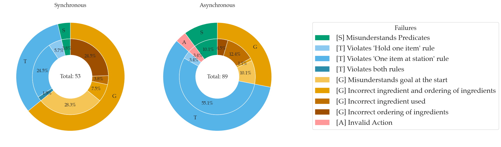

Robotouille benchmarks LLM agents on asynchronous planning through diverse long-horizon tasks with time delays. In asynchronous planning, agents must reason about the order in which subtasks are completed to optimally complete a task.
Effective asynchronous planning — or the ability to efficiently reason and
plan over states and actions that must happen in parallel or sequentially —
is essential for agents that must account for time delays, reason over diverse
long-horizon tasks, and collaborate with other agents. While large language model
(LLM) agents show promise in high-level task planning, current benchmarks focus
primarily on short-horizon tasks and do not evaluate such asynchronous planning
capabilities.
We introduce Robotouille, a challenging benchmark environment designed to test
LLM agents' ability to handle synchronous, asynchronous, and multi-agent scenarios.
These datasets present increasingly complex planning challenges, surpassing existing
benchmarks by requiring agents to manage overlapping task dependencies, time delays,
and collaboration. Our results show that ReAct gpt4-o achieves 47% on synchronous
tasks but only 11% on asynchronous tasks, highlighting significant room for
improvement. We further analyze failure modes, demonstrating the need for LLM agents
to better incorporate long-horizon feedback and self-audit their reasoning during
task execution.
Robotouille environments are procedurally generated to include a variety of items and stations for an agent to use to complete the given task. An agent is provided with a language description of [1] the items and stations in the environment [2] predicate states such as "stove1 has patty1 on top of it" [3] the valid actions at the current state and [4] the goal of the environment.
Make a lettuce tomato cheeseburger
Lettuce Tomato Cheeseburger
Dependency Graph
Make a lettuce tomato fried chicken sandwich
Lettuce Tomato Fried Chicken Sandwich
Dependency Graph
Robotouille is entirely defined through domain and problem JSONs, inspired from PDDL. Domain JSONs are used to define new state predicates and action preconditions and transition effects. Problem JSONs are used to define the initial states and objects along with the task to complete. Below are some examples where (a) and (b) are closest to PDDL, (c) augments actions with additional effects, and (d) allows for more flexible goal specification.
Our best agent baseline, gpt4-o ReAct, achieves 47% accuracy on synchronous tasks and 11% accuracy on asynchronous tasks as shown below. We procedurally generate 10 environments for 10 tasks for a total of 100 problems per setting. Performance drops drastically in the asynchronous environment even for Tasks 1-3 which are similar to those in the synchronous environment.
We also analyze the dominant failure modes of gpt4-o ReAct. We manually annotate LLM hallucinations as uncertainty in the Markov Decision Process (MDP) in the piechart below. We observe that the agent is most uncertain about the goal (G) and then the transition function (T) for the synchronous setting while the inverse is true for the asynchronous setting. We find the increase in rule violations for the asynchronous setting to be due to the increased number of stations necessary for tasks, highlighting the need to improve LLM agent's abilities to verify they are following constraints.
